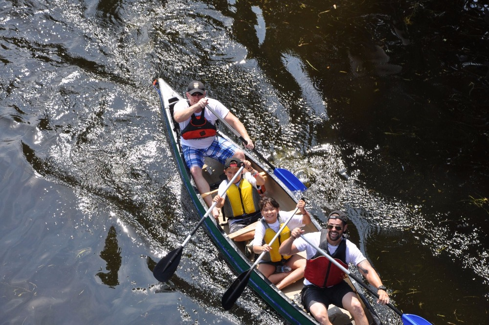

Open site
Open site
GCSIO
Website design and improvements for an organizational website — focused on clear information structure, modern visuals, and an experience that works across devices.
UI Design · Responsive Layout · Content Structure
Visit gcsio.orgABEFER
Website work for a nonprofit organization — improving readability, navigation, and the overall presentation of programs, updates, and community information.
Information Architecture · Visual Refresh · Mobile Optimization
Visit abefer.orgScanSpe
Landing experience and product-facing web work for a digital receipts platform — focused on clean UI, fast performance, and clear feature communication.
Product UI · Front-end · Performance
Visit scanspe.comOneOttawa
Website work for a local/community organization — improving layout consistency, clarity of messaging, and overall usability for visitors and stakeholders.
Website Design · Content Layout · Accessibility Basics
Visit oneottawa.caSwisderm
Website design and development for a dermatology practice — focused on a professional presentation of services, clear patient information, and a polished brand experience across devices.
Website Design · Brand Presentation · Responsive Layout
Visit swisderm.ca
Open siteFlotilla for Friendship
Website design and development for Ottawa’s Flotilla for Friendship — a community event site focused on registration, event details, and storytelling around Indigenous youth and first responders paddling together.
Website Design · Event Landing · Responsive Layout
Visit flotillaforfriendship.ca